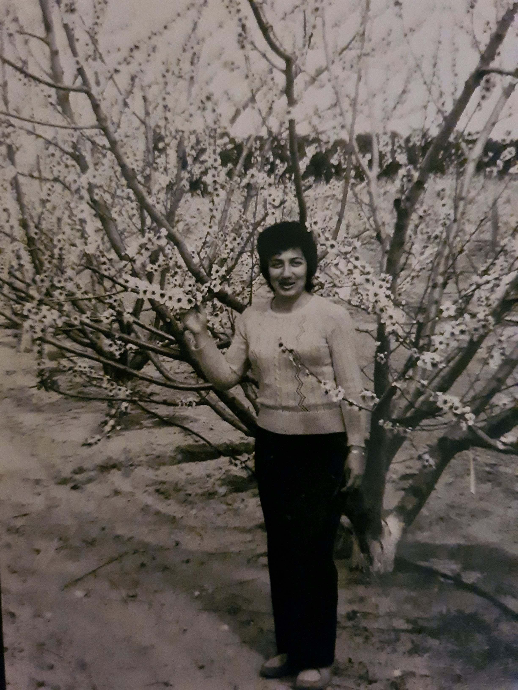
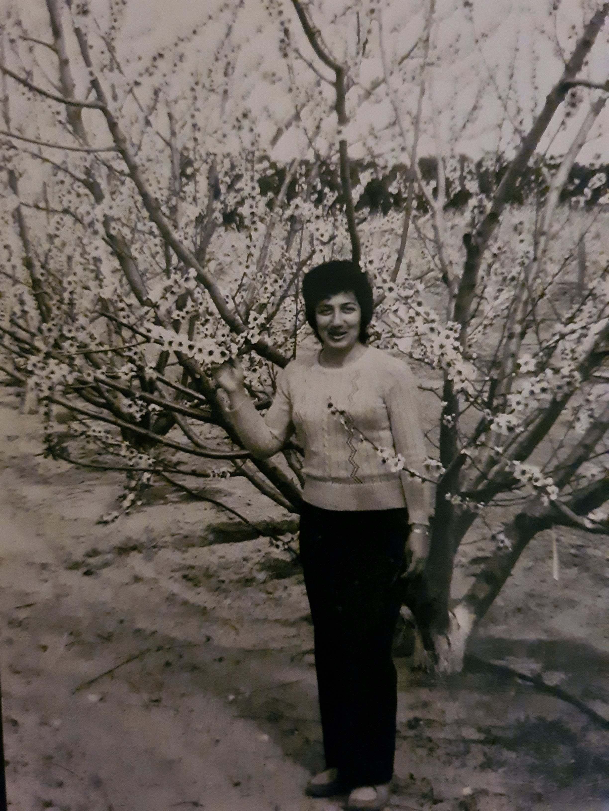

בנימין זיידמן – סבא שלי. נולד ב-5.12.1929 בעיירה בוחוש ברומניה. היו לו 4 אחיות ואח. סבא למד בבי"ס יסודי של הקהילה היהודית בבוחוש במשך 4 שנים, בזמן מלחמת העולם השנייה הפסיק ללמוד ואז בשנת 1945 למד עוד 3 שנים בחטיבת ביניים במגמת מסחר בעיר המחוז. המשיך ללמוד בבוקרשט בבי"ס אורט ושם רכש את המקצוע שבו עבד כל חייו. סבא הכיר את סבתא ג'ני באפריל בשנת 1958, באמצאות חברים. הם התחתנו בנובמבר 1958 ומיד הגישו בקשה לאשרת עליה לארץ, האשרה התקבלה רק כעבור 3 שנים וכך ב-10 באפריל 1961 עלו בנימין וג'ני לארץ והגיעו לאילת. שם היו מספר חודשים אך משום שלא הייתה עבודה הם עברו לגבעתיים, וסבא התחיל לעבוד ב"מקורות", במוביל הארצי ואז עברו לטבריה. לבנימין וג'ני נולדו 2 ילדים, צביקה,אבא שלי, ומאירה אחותו. שניהם נולדו בטבריה, בינתיים הורי ג'ני עלו ארצה והתגוררו באשדוד ולכן בשנת 1966, עברו גם סבא וסבתא לאשדוד.
ז'נט זיידמן - סבתא שלי. נולדה ב-26.4.1937 בעיירה אודובשטש שברומניה. בעיירה זו היו 99% יהודים. סבתא למדה בבי"ס יסודי יהודי בעיירה עד כיתה ד' ואז עברה לגימנסיה באודובשט עד כיתה ח'. משם עברה ללמוד בתיכון בעיירת המחוז. סבתא הכירה את בנימין (סבא שלי) כשהייתה בת 21, ועוד באותה שנה הם התחתנו, וקיוו לעלות מיד לארץ. אלא שהאשרה התעכבה במשך 3 שנים. סבא וסבתא גרו באילת, בגבעתיים,בטבריה ולבסוף באשדוד, כל זה בעכבות מקומות העבודה של סבא. סבתא עבדה כלבורנטית בבית מרקחת באשדוד (1968-72) ואחרי 5 שנים יצאה ללמד רוקחות בת"א בשנת 1979 היא סיימה את התואר והמשיכה לעבוד כרוקחת עד ליציאתה לפנסיה בשנת 1994.


 



three main differences between web1, web2 and web3
| web1 | web2 | web3 | |
|
נחשבת כ"רשת לקריאה בלבד", גרסה זו נבנתה כרשת של אתרים סטטיים לחלוטין ללא שום אינטרקציה של המשתמש איתם, ולכן הייתה זו תקשורת חד סטרית בין של מפיץ התוכן (בונה האתר) לגולש |
נחשבת כ"רשת לקריאה-כתיבה", רשת זו נתנה למשתמשיה את האפשרות לאינטרקציה ביניהם לבין האתר בו הם נמצאים, ולכן איפשרה תקשורת דו סטרית בין מפיץ התוכן למשתמש |
רשת זו מוגדרת בצורה ערטילאית ולא במקרה. בשונה משתי הגרסאות הקודמות של האינטרנט שבהן משתמשים מחפשים באופן אקטיבי את התכן שהם רוצים, בגרסא זו האינטרנט יודע להנגיש לכל משתמש תוכן המותאם אישית אליו |
סטטיות |
|
מקשר מידע - אנשים יכולים למצוא את המידע שהם מחפשים בקלות ונוחות |
מקשר אנשים - אנשים יכולים להתחבר אחד עם השני ולשתף רעיונות בצורה חופשית ונוחה |
מקשר ידע |
קישוריות |
|
חיפוש מהיר אך לעיתים לא מדויק של תוכן |
מנועים מאחזרים מידע בעיקר מתיוגים ידניים של מייצרי התוכן, אשר מאוד איטיים ולוקחים זמן רב |
תיוגים נעשיים בצורה אוטומתית על ידי הרשת |
מנועי חיפוש |
explain the differences in question 1 by example